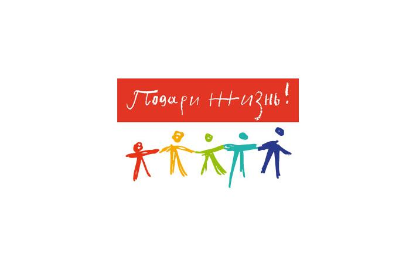

Лента времени развития социальной рекламы
-
1950–1970-е годы:
агитационные плакаты и коллективная ответственность.

Советский производственный плакат 1960-х годов. Директивная модель социальной рекламы, основанная на дисциплине и общественном долге.
-
1980–1990-е годы:
провокационные кампании United Colors of Benetton.

Использование сильных визуальных образов для обсуждения социальных проблем и формирования общественного диалога.
-
2000–2010-е годы:
эмоциональный сторителлинг.

Кампания «Подари жизнь». Апелляция к эмпатии и личной вовлечённости зрителя.
-
2020-е годы:
digital и вирусные форматы.

Социальные кампании в TikTok и других сетях — интерактивность и массовая вовлечённость аудитории.